Финансовый директор + нейросети для финансиста
- Цена
- 126 400 ₽
- Срок
- —
- Объём
- —
- Отзывы
- 10 отзывов
Диплом о профессиональной переподготовке
Промокод на −5%
Сверено с сайтами школ · методика
В подборке 30 программ от 19 школ. Ниже — цены, сроки, документы и разбор, как выбрать.
Программы, где школа указывает оплату частями. Выясните, кто даёт рассрочку: если сама школа — кредитного договора обычно нет, если банк — это кредит.
Не тот формат? Смотрите все курсы финансового директора в общем каталоге или пройдите тест подбора — он покажет три подходящие программы.
Диплом о профессиональной переподготовке

Диплом об окончании курса

Диплом о профессиональной переподготовке
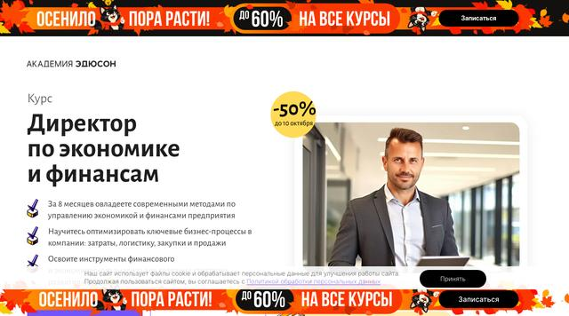
Диплом о профессиональной переподготовке

Диплом о профессиональной переподготовке

Диплом ДПО

Удостоверение о повышении квалификации

Диплом ДПО
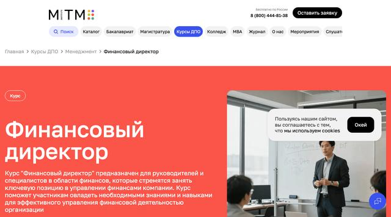
Диплом о профессиональной переподготовке

Диплом о профессиональной переподготовке
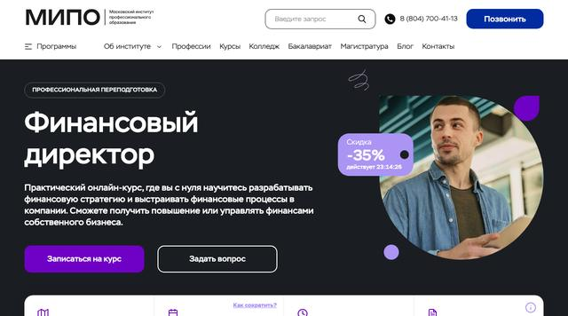
Диплом о профессиональной переподготовке
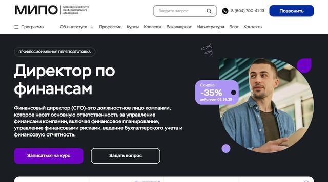
Диплом о профессиональной переподготовке

Удостоверение о повышении квалификации или сертификат MBS
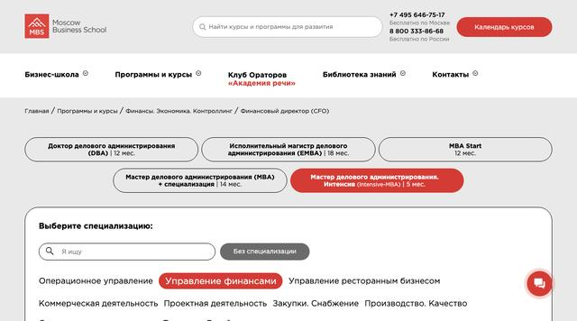
Диплом о профессиональной переподготовке

Удостоверение о повышении квалификации
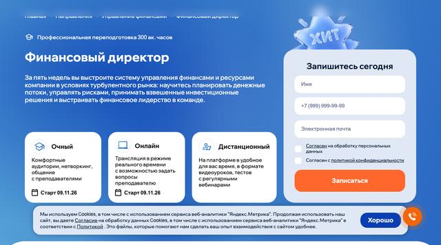
Диплом о профессиональной переподготовке

Сертификат Skillbox

Удостоверение о повышении квалификации

Зависит от тарифа: диплом школы, удостоверение о повышении квалификации или диплом о переподготовке

Диплом о профессиональной переподготовке

Диплом о профессиональной переподготовке
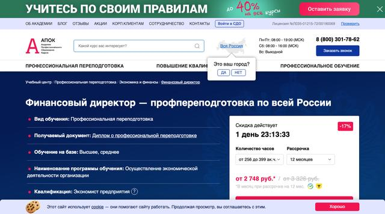
Диплом о профессиональной переподготовке
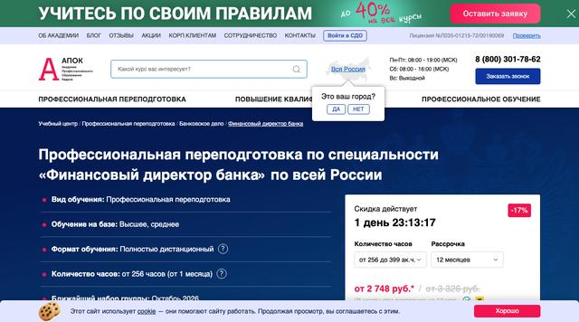
Диплом о профессиональной переподготовке
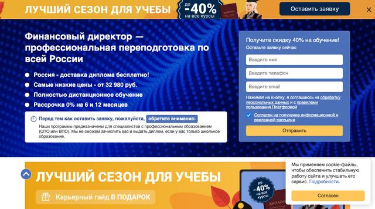
Диплом о профессиональной переподготовке
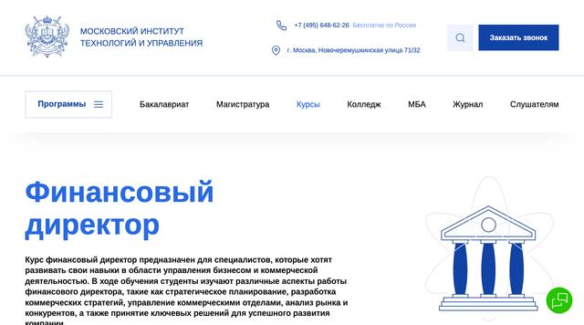
Диплом о профессиональной переподготовке
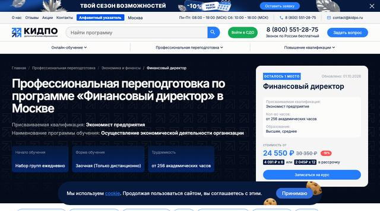
Диплом о профессиональной переподготовке
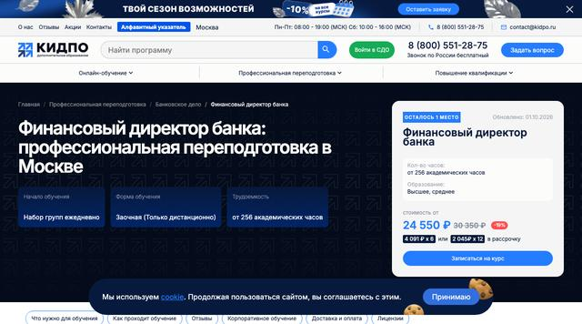
Диплом о профессиональной переподготовке
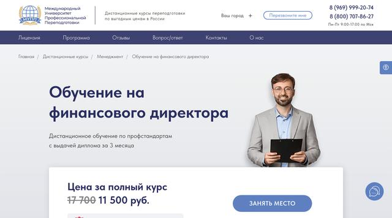
Диплом о профессиональной переподготовке
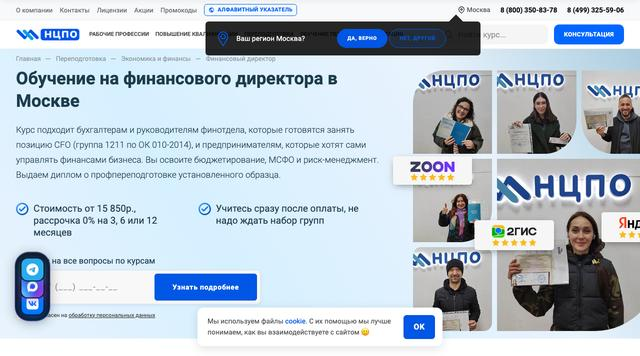
Диплом о профессиональной переподготовке
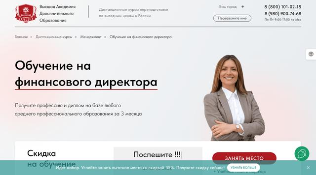
Диплом о профессиональной переподготовке
Одна строка — одна программа. Клик по строке открывает подробное описание.
Не уверены, что выбрать? Тест подберёт 3 программы за минуту →
Рассрочка разбивает дорогую программу на посильные ежемесячные платежи. Важно понять, кто её даёт. Если сама школа — это график оплаты по договору без процентов. Если банк-партнёр — это кредит, даже когда проценты берёт на себя школа, и он отразится в кредитной истории.
Ориентируйтесь на полную сумму и срок, а не на платёж в месяц: рассрочка на 24–36 месяцев с маленьким взносом может закончиться намного позже самой учёбы.
Вычет при оплате частями считается с суммы, реально уплаченной за календарный год. Если рассрочка растянута на несколько лет, вычет можно заявлять за каждый из них.
Банковская рассрочка попадает в кредитную историю, и платить по ней придётся даже после отказа от курса.
Маленький взнос обычно означает долгий срок. Считайте итог.
При оплате частями вычет получают за каждый год — итоговая цена заметно снижается.
Рассрочка школы — это график платежей по её договору. Банковская — потребительский кредит, проценты по которому иногда компенсирует школа.
Обычно да, без штрафов. Точные условия — в договоре.
Да. Вычет считается с суммы, оплаченной в календарном году, в пределах общего лимита социальных вычетов 150 000 ₽. При ставке НДФЛ 13% — до 19 500 ₽ за год, при более высокой ставке — больше, но не больше уплаченного налога.
Если рассрочку дала школа, по договору можно вернуть часть оплаты. Если банк — кредит гасится в любом случае, а деньги за непройденную часть возвращает школа.
У многих школ подборки рассрочка без первого взноса, но условия меняются — проверьте на сайте школы.
Подсветка показывает лучшее значение в каждой строке: ниже цена, короче срок, больше часов и отзывов.